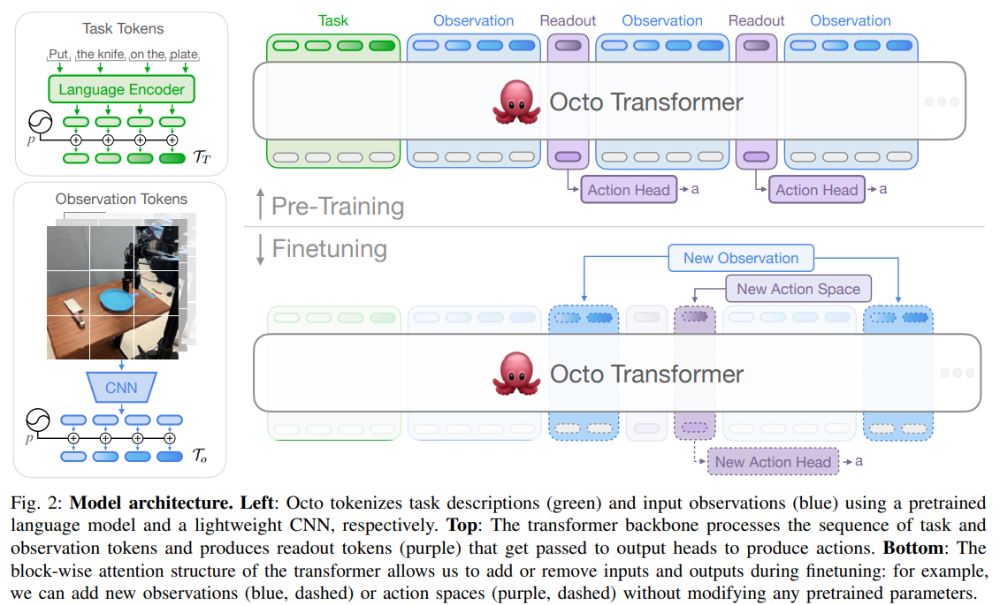
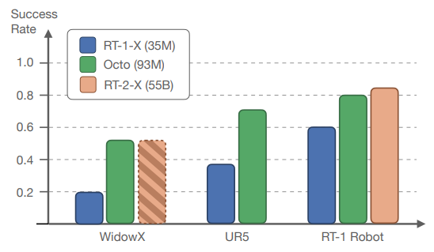
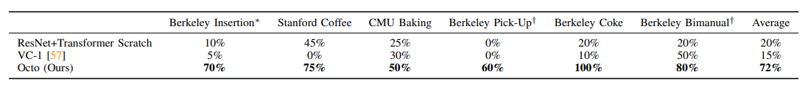
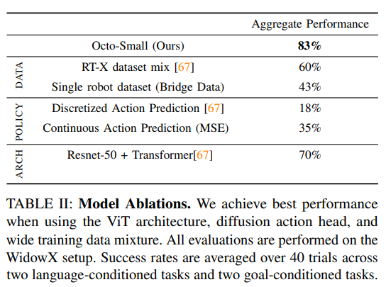
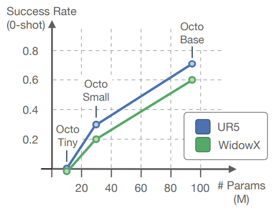

VLA_3. Octo: An Open-Source Generalist Robot Policy
Introduction
We want to fintune with only a little data instead of training new policies from scratch. ⇒ Generalist Policy. With no additional training, this policy can accept different camera configurations and can control different robots. Model can be adapted to new robot setups with new sensory inputs, action spaces, and morphologies(Unlike RT-1,2) Note that Octo is not based on VLM, so by definition of VLA in Rt-2, Octo is not VLA in that meaning.
Model
Octo model emphasizes flexibility and scale, while providing generic and scalable recipe that can be trained on large amounts of data.
Architecture

1. Input tokenizer
Task definitions: language instructions , goal images and observations . For language inputs, we use pretrained transformer t5-base model. For images, we use shallow convolution stack, then split into a sequence of flattened patches like ViT. Finally we get tokens as form where means task.
2. Transformer backbone
Octo transformer attention pattern is block-wise masked. By grouping inputs—such as cameras, robot states, and action predictions—into individual token blocks, the model can compute attention selectively using an attention mask. This enables adding or removing observations and tasks during finetuning. The prior architectures would require re-training when adding or removing inputs.
3. Readout head
The readout head extracts and compresses the contextualized information processed by the transformer backbone into a condition vector, passing it to the diffusion head to generate precise robot actions through a denoising process.
Training data
We train Octo on a mizture of 25 datasets from the Open X-Embodiment Dataset.
Training objective
We use a conditional diffusion decoding head to predict continuous, multi-modal action distributions. Where multi-modality refers to a situation where multiple valid choices exist for a single state—such as deciding to move either left or right when encountering an obstacle. In such scenarios, an MSE-based model fails because its loss function calculates the mean of the target distribution, causing it to average these two valid paths and mistakenly navigate directly through the center, which leads to a collision. Only one forward pass of the transformer backbone is performed per action prediction, and then the multi-step denoising process is carried out within the small diffusion head. 1. Sample Gaussian noise vector . 2. Apply K steps of denoising with a learned denoising network . is a conditioning vector in diffusion model, FiLM adjusts scale and shifts parameter based on . Denoising network is conditioned on the output of the previous step, and the output embedding of the transformer action readout.
We train the diffusion head using DDPM.
Experiments
1. Out-of-the-box
It tests the performance of the model itself.

2. Data-efficient finetuning

3. Design decisions

(1) Model architecture
We use transformer-first architecture. Developing a generalist policy requires large amounts of data, and as dataset sizes scale up, ViT (Vision Transformer) performance improves significantly. Therefore, through a transformer-first architecture, most of the computation is concentrated in the central ViT to maximize scalability(Linear improvements in performance with respect to model size and compute). For small dataset, ResNet performs better than ViT architecture.
(2) Training data
Performance of Octo increases as we increase the number of training datasets.
(3) Training objective
We compare with MSE and cross-entropy loss on discretized actions. The diffusion head can model multi-modal action unlike MSE, and can retain the precise continuous actions unlike CE.
(4) Model scale

Larger model has better visual perception.Limitations
- Cannot process wrist camera information
- Train via imitation
Conclusions
To construct a generalist policy, the Octo model leverages a massive dataset. To train on this data effectively, it employs a blockwise attention masking architecture that enables efficient fine-tuning. Furthermore, Octo utilizes a transformer-first design to maximize scalability, concentrating most of the computation in a central ViT. Finally, to accurately output complex and diverse behaviors—such as multi-modal action distributions—it incorporates a diffusion action head.